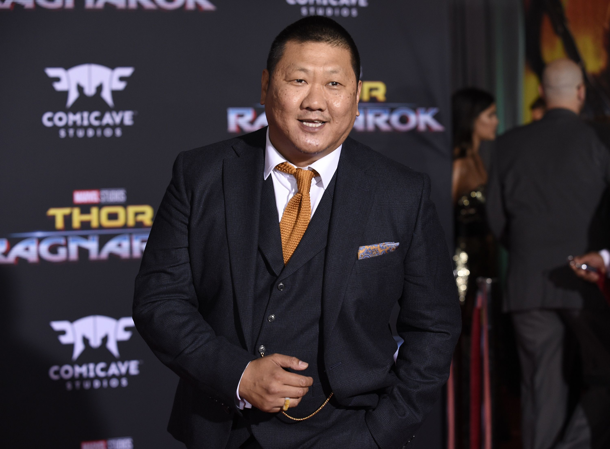

Main Cast
Benedict Cumberbatch
Benedict Cumberbatch rose to fame as the star of the BBC's Sherlock. He went on to appear in Hollywood films such as Tinker Tailor Soldier Spy, War Horse, Star Trek: Into Darkness and The Hobbit trilogy. Along with winning several stage and screen awards, Cumberbatch received Golden Globe and Oscar nominations for his role in the acclaimed 2014 Alan Turing biopic, The Imitation Game. He joined the Marvel Cinematic Universe in 2016 as the titular sorcerer of Doctor Strange, later reprising the role for blockbusters like Thor: Ragnarok and Avengers: Infinity War.

Find Below a MP3 of an interview with him about the film
If you can't view the Audio
Click Here to listen and view on YoutubeIf you want to read more about Benedict
Click HereTilda Swinton
Tilda Swinton was born on November 5, 1960, in London, England. A childhood classmate and friend to Lady Diana, she graduated from Cambridge University in 1983. After performing with the Royal Shakespeare Company, Swinton made her film debut in Derek Jarman's Caravaggio. She later earned an Academy Award (best supporting actress) for her role in Michael Clayton.
For More Info
Click hereMads Mikkelsen
Mads Dittmann Mikkelsen (born 22 November 1965) is a Danish actor. In May 2012, he won the Best Actor Award at the Cannes Film Festival for his role in the film The Hunt.
To read more of his Biography
Click HereBenedict Wong
Benedict Wong was born in 1970 in Manchester, England. He is an actor and writer, known for Doctor Strange (2016), Avengers: Infinity War (2018) and The Martian (2015).
To View His IMBD Biography
Click HereStan lee
Stan Lee went on to work for the company that would eventually become Marvel Comics. With artist Jack Kirby, Lee launched the superhero team the Fantastic Four in 1961 and was soon responsible for creating popular characters like Spider-Man, the X-Men, the Hulk and Thor. Lee later worked in a number of comic-related business and multimedia ventures.